← ← ← 5/22/2024, 3:05:39 PM | Posted by: Lorenzo Battistela
A model of computations is a model which describes how an output of a mathematical function is computed given an input. A model describes how units of computations, memories and communications are organized. [source]
If you're a CompSci enjoyer, i'm sure you know at least a few models of computation. The first one I learned was Turing machines - an abstract machine that manipulates symbols on a strip of tape according to a table of rules. Turing machines are sequential, which means that it processes its input one symbol at a time, moving through a sequence of states according to a predetermined set of rules. It is a series of discrete steps, where each step depends on the outcome of the previous one.
Other examples of sequential models include decision trees, Finite State machines and Post machines. In addition to Turing machines, I have also introduced the Lambda Calculus in one of my previous articles. (Type Theory 101). The Lambda Calculus is a formal system in mathematical logic that express computation based on function abstraction and application using variable binding and substitution. It is a universal model of computation, and, for example, we can use it to simulate any Turing Machine. The lambda calculus is a functional model of computation.
But today we're here to discuss another type of model. It is called Interaction Nets. INets are a graphical model of computation, introduced by Yves Lafont in 1990. It is a model of distributed computation with local synchronization, and appeared as a generalization of Girard's proof nets for linear logic. By local synchronization, it means that there is no need to consider global time for computation. By distributed, it means that the computation is performed at several places at the same time. Interaction nets are deterministic in a strong sense, not only the result, but the computation is also unique. From the point of view of computability, Interaction nets are equivalent to Turing machines (we can simulate Turing machines using Interaction Nets). However, from the point of view of computation, we have parallelism. Let's understand how it works.
Interaction nets are a universal interaction system. This statement implies that any other interaction system can be translated into it. The system of interaction combinators is universal and the fundamental laws of computations are commutation and annihilation.
I will introduce the symbols and syntax as per the original article. Interaction nets are built uppon a piece called cell. For example, here we have a symbol alpha with it's arity ≥ 0 (where arity is the number of auxiliar ports). Such a symbol is called a cell:
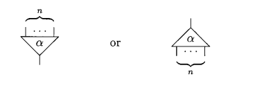
A cell always have one principal port and n N auxiliar ports. Since arity can be equal to zero, we can also have a cell with no auxiliary port:
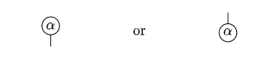
We can define a net in terms of a graph, consisting of a finite number of cells and an extra set of free ports, where each port is connected to another one by means of a wire. For example, we can build the following net:
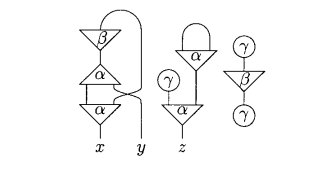
Note that here, alpha has arity 2 (because it has 2 auxiliary ports), beta has arity 1 (just one auxiliary port) and gamma is arity 0 since it has no auxiliary port. The net above has three free ports: x, y and z.
Also note that a net is not necessarily connected, and a wire may connect two ports of the same cell. That said, one can assume that cyclic wires are also allowed. To sum up, a net is completely described as:
So, we can say that we form a net with cells, free ports and wires connecting them.
A wiring is a net w without cell and without cyclic wire. It is just a pairing of its free ports (e.g 2 ports connected). In particular, a wiring has an even number of free ports (because if it was not even, one would be without connection).
Interaction is defined formally as a reduction of form:
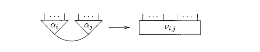
Where we have a finite alphabet with m symbols (from a1 to am) with arities n1 to nm. Then, an interaction rule is a reduction where v i,j is a net with ni + nj free ports.
Basically, the interaction rule will reduce the first net to the second one, considering that cells can only intereact pairwise, through their principal ports. The free ports last in the reduced net is the sum of the arities of the cells a_i and a_j. It will make more sense when we visualize this rule in practice.
Note that cyclic wires may also be created when a rule is applied inside the net. An interaction system is a set of interaction rules that can be applied without any ambiguity. If an interaction system follow the ambiguity rules (defined more precisely in the article), it is necessarily finite.
We also have a property called confluence. This states that if we have a net A, that when reduced, can be reduced to b and b' (with b != b') then b and b' reduce in one step to a common C.
The proof for this proposition is that in an instance of the left member of a rule, the cells are connected through their principal ports, so that two instances are necessarily disjoint and the corresponding rules can be applied independently.
The consequence of this rule is that if we have a net A that reduces to an irreducible net B in N steps, then any reduction starting from A will eventually reach B in N steps. This means that we can abstract from the irrelevant order of application of rules. This is huge! Because with that proof, we can say that interaction nets are deterministic and an asynchronous model of computation!
We can simulate unary arithmetics using a similar encoding as in lambda calculus (at least when i learned about it). We need the symbols s, which stands for successor and it is of arity 1. We also need a way to represent 0, our symbol of arity 0.
Then, we define sum and product operations through the following equations:
sx + y = s(x + y)0 + y = ysx * y = (x * y) + y0 * y = 0Note that this is defined inductively.
In this example (also described in the original paper), we have an unusual cell way of representing the system:
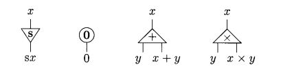
Note that since addition is defined by induction in the first argument, we need to plug this argument into the principal port of +.
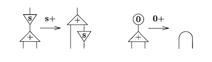
With the rules for addition, we can see that sum with 0 is a simple wire (which ultimately results in our y as in the rule 0 + y = y). When you add with a successor, we can visually see our rule happening. The upper s port would be sx, the successor of x. The principal port of the + port connects with s, resulting in the auxiliary ports for the + cell y and x + y. After the interaction, the auxiliar port where the sum is now has the successor cell in it, indicating s(x + y) as we stated before.
Sum is easy, but we also have to define the product rule. Look at our rules. The argument y is used twice in the first equation defining multiplication, and not used in the second one. For this, we need another two symbols. One for duplication (since we use it twice in the first equation) and eraser (when we dont have to use it at all).
Its names already tell what they do. When a net representing a nat number is connected to a duplicator port, it should be duplicated, and when connected to the erasor, it should be erased. Then, we have the following rules for multiplication:
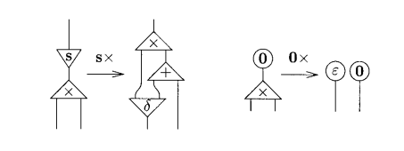
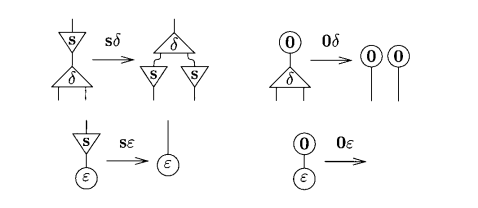
Note that, in our previous definition, the principal port holds x, the first aux port (from left to right) holds y and the last one holds x * y.
Look that when defining sx * y, it results in a sum port x + y with its principal port connected with the result of a product port. This happens because now we will sum y with the result of x * y, how without the old suc that we removed. It is a recursive operation that in the end will sum it all together to find the result. This works because we know that, for example, 3 * 2 is the same thing as (2 * 2) + 2, and we can rewrite it this way recursively until we get only sums (because eventualy we will reach a 0 multiplication).
The duplicator symbol is used because we need to use y twice, once in the sum cell and other in the recursive product.
There are two configurations that may lock a computation. Irreducible cuts and vicious circles. A cut is simply two cells connected through their principal ports. Cuts can be reducible or irreducible. For example, in unary arithmetics, a cut between zero and + is reducible, but a cut between s and s is irreducible. Note that irreducible cuts can never be eliminated since cells can only interact throught their principal ports.
To define vicious circles, we shall define principal paths. A wire is said to be a principal path of length 0. If we have N cells, where the principal port of c_i is connected to an auxiliary port of c_i + 1, we have a principal path of length n. For example, a church encoded number is a principal path of length n, where n is also the number encoded.
Now, think about three suc cell. Let's connect the principal port of suc_0 to the aux port of suc_2. Then, the main port of suc_1 to the aux port of suc_0 and finally the main port of suc_2 to the aux port of suc_1. The result would look like this:
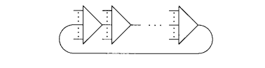
Note that we cannot reduce this, and that this is a closed path. If we keep following connections, we will do that infinitely. This is called a closed principal path of length N, and it is a vicious circle of length N.
We say a net is reduced if it contains no cut and no vicious circle. Good examples of reduced nets are simple trees and wires.
Note that an irreducible net is not necessarily reduce (since it may contain irreducible cuts or vicious circles), but a reduced net is always irreducible.
Another thing to note is that for unary arithmetics, all right members of rules are reduced nets. This is an important property, and in general there is something wrong with the system if this is not true.
Now that we know and understand what are interaction nets, let's understand the universality of the system of interaction combinators. The rules for the combinators are only six:
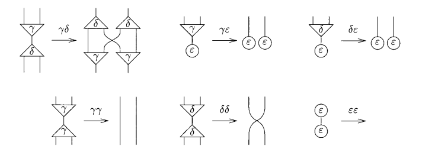
The system of interaction combinators consists of three symbols (the combinators).
We also can define two kinds of interaction rules:
Note that the annihilations gamma and delta are not the same.
The system of interaction combinators is very very simple, and yet universal. Any interaction system can be translated into the system of interaction combinators.
Let's follow up introducing a construction inspired by the rules of linear logic. A multiplexor.
A multiplexor allows you to bundle and unbundle many wires into a single wire. The rules are given by the image below:
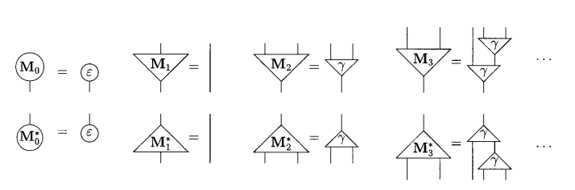
Note that we have M_n and M*_n. The multiplexor magic happens when these two come together. We could connect them directly when building a net or have a net where initially they are not connected, but then they get connected through some reduction. When M_n and M*_n interact, we unbundle n wires that were packed into one!
We can also construct other structures that come from linear logic, such as Menus and Selectors. For example, we can think about a menu as multiplexors that connect N packages to N - 1 erasers, leaving only the selected choice bundled after the reduction.
Conclusion
This is a gentle and easy introduction to Interaction Nets model of computation, and there is a lot more ground to cover after that. My plans are to talk about:
Note that this article is heavily based on the original article by Yves Lafont, and its purpose is to be a learning resource with a more straightforward approach and less mathematical notation.
I'll leave my references and other resources to learn more about this below:
Images for rules and definitions were taken from the Interaction Combinators article.